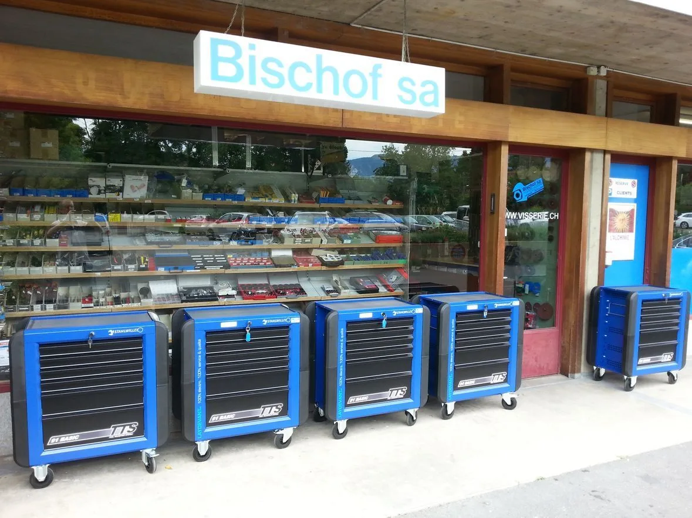

Je visse à Genève, j’achète chez Bischof.
Visserie, fournitures industrielles et outillage professionnel, à Grand-Lancy depuis plus de 50 ans.
Une question, une référence ? Appelez-nous022 794 56 11
Ce qu’on trouve au comptoir
Pour tous types d’industries : de la vis la mieux adaptée à votre appareil jusqu’à l’outil qui fera le travail.
- Visserie
Spécialistes en visserie et fourniture industrielle, nous vous conseillons sur le choix des vis les plus adaptées pour tous types d’appareils.
- Outillage
Pinces, clés, outillages électriques en tout genre : des outils professionnels, et notre expertise pour choisir le meilleur matériel selon votre besoin.
- Fournitures industrielles
L’interlocuteur privilégié de tous types d’industries à Genève.
Une bonne raison de commander : des conseils professionnels, avec la visserie et les outils.
En commandant chez nous, vous avez accès non seulement à de la visserie et des outils de qualité, mais aussi à des conseils professionnels.
Vous doutez ? Vous n’avez que 10 chiffres à taper sur votre téléphone : 022 794 56 11. Nous connaissons les bons outils dont vous avez besoin.
Depuis plus de 50 ans à Genève, Bischof SA fournit en visserie et outillage les entreprises de tous types d’industries.
Heures d’ouverture
| Lundi – jeudi | 7 h – 12 h · 13 h – 17 h 45 |
|---|---|
| Vendredi | 7 h – 12 h · 13 h – 17 h |
| Samedi – dimanche | Fermé |